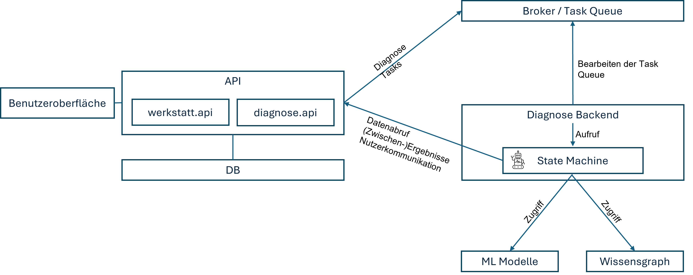

KI
In diesem Abschnitt wird beschrieben, wie die Funktionalität zur KI unterstützten Fehlerdiagnose umgesetzt ist.
Vorüberlegungen
Kernstück der KI unterstützten Fehlerdiagnose ist die am DFKI entwickelte
State Machine.
Die State Machine nutzt
- Am Fahrzeug generierte Messdaten, also insbesondere OBD Daten und Oszillogramme
- Einen Wissensgraph zur Beurteilung der OBD Daten
- ML Modelle zur Bewertung von Oszillogrammen
Die State Machine ist ein Agent, der viele komplexe Schritte der Fehlerdiagnose weitgehend autonom durchführt. Insbesondere die Anwendung von Wissensgraph und ML Modellen wird eigenständig gehandhabt. Der Nutzer hat lediglich die benötigten Eingabedaten zur Verfügung zu stellen. Diese werden zum Teil erst während der Fehlerdiagnose ermittelt. Beispielsweise entscheidet die State Machine erst nach Auswertung der Fehlercodes, für welche Bauteile Oszillogramme zu erstellen sind. Entsprechende Anweisungen müssen dann an den Nutzer übermittelt werden. Die Diagnose kann fortgesetzt werden, sobald der Nutzer die Daten zur Verfügung gestellt hat.
Aus Nutzersicht werden die folgenden Anforderungen an das KI gestützte Diagnosesystem festgelegt:
- Diagnose Management: Starten, Abbrechen etc.
- Informationen über Zustand und Ergebnisse der Diagnose einsehen
- Benachrichtigt werden, wenn eine eigene Handlung erforderlich ist (z.B. Daten hochladen)
- Es müssen mehrere „offene“ Diagnosen gleichzeitig vorliegen können, e.g. wenn eine Diagnose auf ein bestimmtes Oszillogramm „wartet“, dann sollte es möglich sein, weiter an anderen Fällen zu arbeiten
- Die Diagnose sollte automatisch weitergehen, sobald benötigte Nutzerhandlungen (z.B. Daten hochladen) ausgeführt wurden
Auch die State Machine als "Rechenkern" des Diagnosesystems stellt eine Reihe von Anforderungen an das System, in das sie eingebettet sind. Diese sind:
- Zugriff auf Messdaten / Informationen zum Fall (Fehlercodes und Oszillogramme)
- Nutzerkommunikation ((Zwischen-)Ergebnisse, benötigte Daten etc.)
- Laden von ML Modellen für die Oszillogramme spezifischer Bauteile
- Zugriff auf (zentralen) Wissensgraph
Es ist auch vorgesehen, dass das Diagnosesystem nicht direkt auf die Datenbank des Hubs zugreift, sondern über eine dedizierte API. Dadurch wird sichergestellt, dass nur die benötigten Messdaten in das Diagnosesystem gelangen und keine anderen Geschäfts- oder Kundendaten.
State Machine Integration
Die unten stehende Abbildung skizziert die Integration der State Machine.

Beschreibung der Abbildung:
AnwenderInnen interagieren über eine Benutzeroberfläche mit dem System. Über
diese können die durch die werkstatt.api definierten Datenmanagement
Operationen durchgeführt werden. Dies sind u.A. Anlegen und Bearbeiten
von Fällen, Hochladen von Fahrzeugdaten (Fehlercodes, Oszillogramme), das
Starten der Diagnose für einen Fall und der Abruf von Informationen zum
aktuellen Diagnosezustand.
Wird mittels der werkstatt.api die Aktionen Starten der Diagnose durchgeführt,
triggert dies die Erzeugung eines Diagnose Tasks, der vom API Service in einer
Task Queue abgelegt wird.
Diese wird kontinuierlich vom Diagnose Backend Service bearbeitet.
In diesen ist die State Machine als Softwarebibliothek eingebunden. Die
State Machine interagiert mit dem Datenkern des Hubs über die diagnose.api.
Diese ermöglicht den Abruf der relevanten Daten zum Fall, sowie das Senden
von Zwischenergebnissen und Messaufträgen. Auf diese Informationen können
Anwender wiederum mittels der werkstatt.api zugreifen.
Durch diesen asynchronen Dialog zwischen Anwendern und State Machine wird sichergestellt, dass sich auf einem AW4.0 Hub mehrere Diagnosen gleichzeitig "in Bearbeitung" befinden können, ohne dass dies die Interaktionsmöglichkeiten von Anwendern mit dem Datenkern blockiert oder einschränkt.
Zur Umsetzung der Task Queue basierten Kommunikation zwischen API und Diagnose Backend verwendet der Hub Prototyp Celery mit Redis als Broker verwendet.
Skalierbarkeit
Der Prototyp beinhaltet derzeit jeden Service einmal. Im Szenario einer sehr großen Betreiberfirma mit vielen Werkstätten ist es denkbar, dass viele offene Diagnosen gleichzeitig vorliegen. Aufgrund der potenziell rechenintensiven Ausführung der State Machine ist nicht auszuschließen, dass es dabei zu längeren Wartezeiten kommt, falls die Task Queue nur von einem Diagnose Backend bearbeitet wird. Der im vorherigen Abschnitt vorgestellte Integrationsansatz kann horizontal Skaliert werden, indem Replikate des Diagnose Backends die Task Queue parallel bearbeiten.